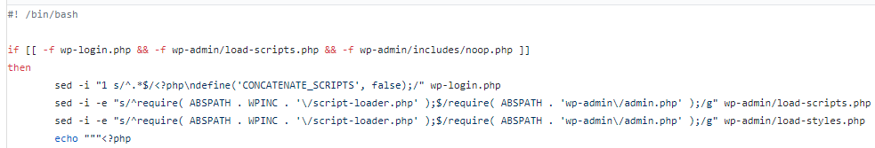
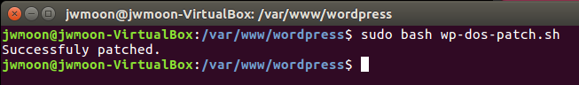
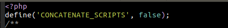
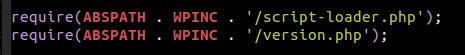
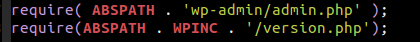
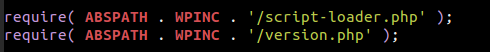
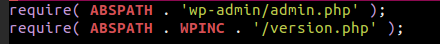
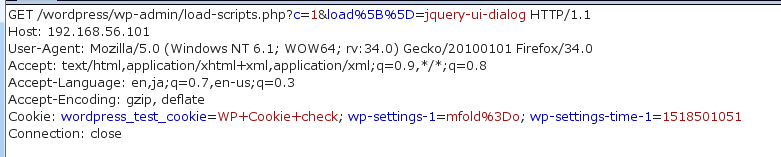
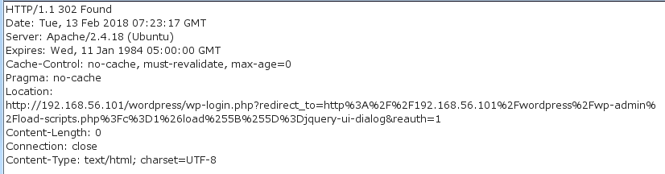
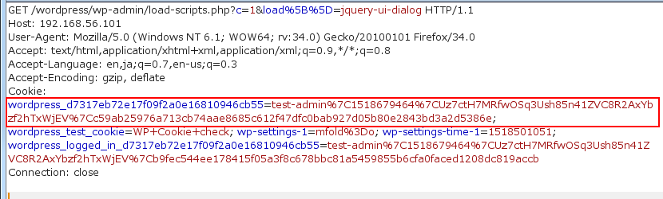

CVE-2018-6389 ユーザー・パッチの適用及び結果の検証
Table of Contents
1 ユーザー・パッチの適用
1.1 ユーザパッチの概要
- wp-login.phpでloadモジュールを使用しないように設定
- load-scripts.phpでscript-loader.phpを使用しないように設定
- load-styles.phpでscript-loader.phpを使用しないように設定

Figure 1: ユーザー・パッチのスクリプトの一部
1.2 ユーザパッチ実行
- https://github.com/Quitten/WordPress/blob/master/wp-dos-patch.sh でパッチスクリプトをダウンロードする。
- このスクリプトをワードプレスがインストールされてる場所のルートパスにコピーする。
- ワードプレスのルートで次のコマンドを実行する
sudo bash wp-dos-patch.sh
パッチが成功した。

1.3 WordPressのバージョンが4.4未満の場合
バージョンが4.4以上の場合は、次のステップを省略できる。
4.4未満であれば、次の3つの段階を経た後、スクリプトを実行する。
テスト環境のワードプレスは4.3.14版である。それ以下のバージョンでは、追加の手順が必要になることもある。
1.3.1 noop.php生成
パッチが成功するには、上記の3つのphpファイルのほかwp-admin/includes/noop.phpファイルが存在しなければならない。
該当ファイルは、ワードプレスのバージョン4.4（2015.12.8リリース）以後提供されるので、テスト環境（バージョン4.3.15）には存在しなかった。
したがって、パッチを実行するには、ワードプレスのバージョンを4.4以降にアップグレードするか、もしくはnoop.phpファイルを手動で作成する必要がある。
今回のテストでは、何の内容がないnoop.phpファイルを作成しておいた。
1.3.2 パッチスクリプトで6行目を変更
4.4以下のバージョンでは、以下の正規表現が正常に動作していない。したがって、次のように変更する。
sed -i -e "s/^require( ABSPATH . WPINC . '\/script-loader.php' );$/require( ABSPATH . 'wp-admin\/admin.php' );/g" wp-admin/load-scripts.php を
sed -i -e "s/^require(ABSPATH . WPINC . '\/script-loader.php');$/require( ABSPATH . 'wp-admin\/admin.php' );/g" wp-admin/load-scripts.php
に変更する。
変更内容 : ( ABSPATH . WPINC . '\/script-loader.php' ) の前後スペースを削除
1.3.3 load-scripts.phpとload-styles.phpで必要な関数を削除
@ignoreと宣言された関数を削除する。
- load-scripts.php：14ラインから104ラインまで
- load-styles.php：14ラインから83ラインまで
この手順を省略すると、管理者ページでJavaScriptとスタイルシートを使用することができなくなるので、欠かさず実行するようにする。
1.4 ソースコードの比較
ソースコードがどのように変わったのか見てみよう。
- wp-login.php
phpファイルの上部に define（ 'CONCATENATE_SCRIPTS、false）; が追加されました。

- load-scripts.php
require( ABSPATH . WPINC . '/script-loader.php' ); が require( ABSPATH . 'wp-admin/admin.php' ); に変わった。

Figure 4: パッチの適用前

Figure 5: パッチの適用後
- load-styles.php
require( ABSPATH . WPINC . '/script-loader.php' ); が require( ABSPATH . 'wp-admin/admin.php' ); に変わった。

Figure 6: パッチの適用前

Figure 7: パッチの適用後
2 結果の確認
パッチの適用後、同じ要求（攻撃）を送信見る。
2.1 管理者ログイン前

Figure 8: JavaScriptの読み込み要求

Figure 9: JavaScriptのロード応答、302リダイレクト応答が返される。
2.2 管理者ログイン後

Figure 10: 同じJavaScriptのロード要求、セッションIDが設定されている。

Figure 11: JavaScriptのロード応答、正常にJavaScriptがロードされた。
3 結論
今回の脆弱性は、次の2つの条件のために可能だった。
- ログインしなくてもloadモジュール（load-scripts.php、load-styles.php）を使用可能である。
- loadモジュールでscript-loader.phpを使用する。
パッチの適用後、上記2つの条件が達成されていないことを確認した。
- ログイン後にのみloadモジュールを使用できるようになった。
- script-loader.phpを使用する部分が消えた。
これにより、ユーザー・パッチで、今回の脆弱性CVE-2018-6389の対応ができたことを確認した。
ただし速度向上のためのscript-loader.phpを使用しないようになったので、管理者ページで多少の読み込み速度の低下が予想される。
4 診断での活用
今回の研究をワードプレスのサイトを診断する時に利用することができる。
例えば、/wp-admin/load-scripts.phpあるいは/wp-admin/load-styles.phpを認証なしで使用することができている場合は、CVE-2018-6389の脆弱性の可能性があると報告することができる。